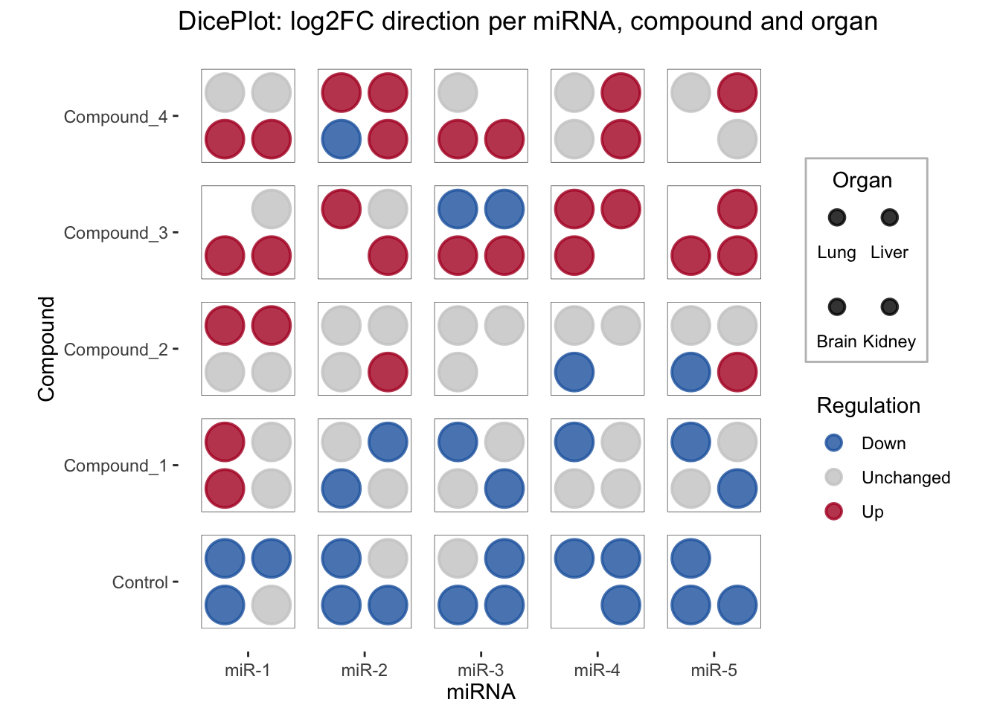
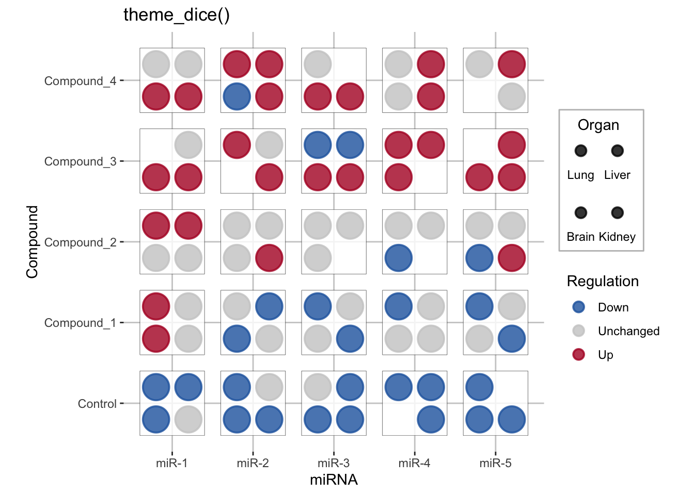
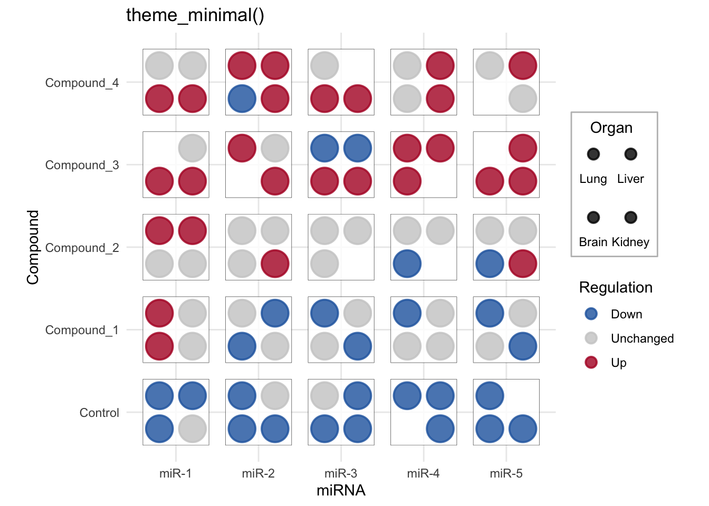
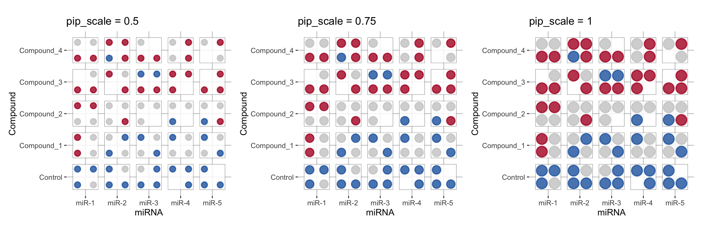

Related chart types

Scatter

Heatmap

Correlogram

Bubble

Connected scatter

Density 2d
A dice plot showing miRNA dysregulation across compounds and organs, using categorical fill to encode regulation direction. Built with R and the ggdiceplot package.
This page showcases a categorical fill dice plot using the ggdiceplot package. Instead of mapping fill to a continuous gradient, we map it to a discrete variable (regulation direction), making it easy to see patterns of up- and down-regulation at a glance.
You can find the package source on GitHub.
We use the bundled sample_dice_miRNA dataset, which
simulates miRNA dysregulation across compounds and
organs, with a categorical direction
variable (Up, Down, Unchanged).
Each row represents one miRNA–compound–organ combination. The
Organ variable will be mapped to pip positions (the
dots aesthetic), and direction to fill
color.
This plot places miRNAs on the x-axis, compounds on the y-axis. Each tile has up to 4 pips (one per organ: Lung, Liver, Brain, Kidney). Pip color indicates regulation direction.
We use scale_fill_manual() with a diverging blue–red
scheme to distinguish down- from up-regulation.

direction_colors <- c(Down = "#2166ac", Unchanged = "grey80", Up = "#b2182b")
ggplot(df_dice, aes(x = miRNA, y = Compound)) +
geom_dice(
aes(dots = Organ, fill = direction, width = 0.8, height = 0.8),
show.legend = TRUE,
pip_scale = 1.0,
ndots = length(levels(df_dice$Organ)),
x_length = length(levels(df_dice$miRNA)),
y_length = length(levels(df_dice$Compound))
) +
scale_fill_manual(values = direction_colors, name = "Regulation") +
theme_dice() +
theme(
axis.text.x = element_text(angle = 0, hjust = 0.5, vjust = 0.5),
axis.text.y = element_text(hjust = 1),
panel.grid = element_blank()
) +
labs(
title = "DicePlot: log2FC direction per miRNA, compound and organ",
x = "miRNA", y = "Compound"
)theme_dice() provides a clean minimal look optimized for
dice plots. You can layer additional theme() calls on top
for fine-tuning. Let’s compare theme_dice() with
theme_minimal():
direction_colors <- c(Down = "#2166ac", Unchanged = "grey80", Up = "#b2182b")
ggplot(df_dice, aes(x = miRNA, y = Compound)) +
geom_dice(
aes(dots = Organ, fill = direction, width = 0.8, height = 0.8),
show.legend = TRUE,
pip_scale = 1.0,
ndots = length(levels(df_dice$Organ)),
x_length = length(levels(df_dice$miRNA)),
y_length = length(levels(df_dice$Compound))
) +
scale_fill_manual(values = direction_colors, name = "Regulation") +
theme_dice() +
labs(title = "theme_dice()", x = "miRNA", y = "Compound")
ggplot(df_dice, aes(x = miRNA, y = Compound)) +
geom_dice(
aes(dots = Organ, fill = direction, width = 0.8, height = 0.8),
show.legend = TRUE,
pip_scale = 1.0,
ndots = length(levels(df_dice$Organ)),
x_length = length(levels(df_dice$miRNA)),
y_length = length(levels(df_dice$Compound))
) +
scale_fill_manual(values = direction_colors, name = "Regulation") +
theme_minimal() +
labs(title = "theme_minimal()", x = "miRNA", y = "Compound")
The pip_scale parameter controls how large pips are
relative to the tile. Let’s compare different values side by side:
library(patchwork)
make_plot <- function(ps) {
ggplot(df_dice, aes(x = miRNA, y = Compound)) +
geom_dice(
aes(dots = Organ, fill = direction, width = 0.8, height = 0.8),
pip_scale = ps,
ndots = length(levels(df_dice$Organ)),
x_length = length(levels(df_dice$miRNA)),
y_length = length(levels(df_dice$Compound))
) +
scale_fill_manual(values = direction_colors) +
theme_dice() +
labs(title = paste0("pip_scale = ", ps)) +
theme(legend.position = "none")
}
make_plot(0.5) + make_plot(0.75) + make_plot(1.0)
Related chart types
👋 After crafting hundreds of R charts over 12 years, I've distilled my top 10 tips and tricks. Receive them via email! One insight per day for the next 10 days! 🔥